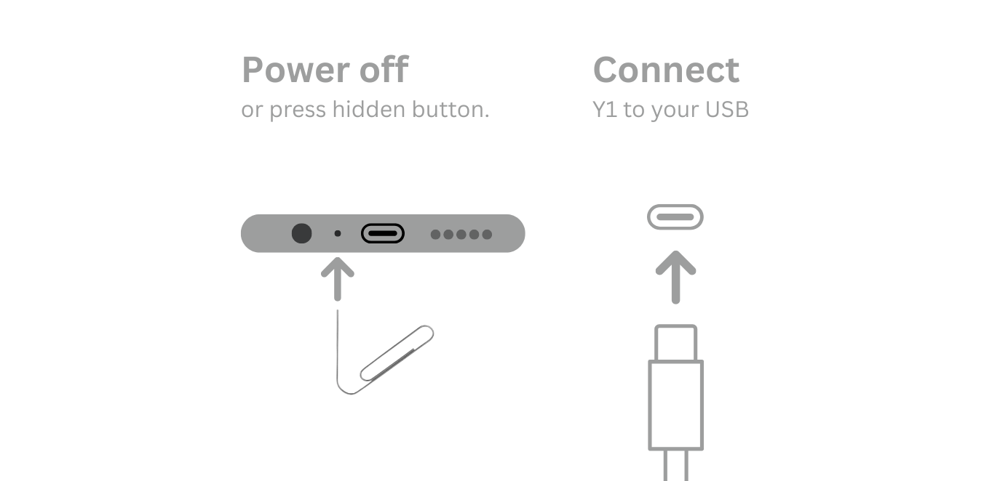

Działa ze wszystkimi odtwarzaczami audio Innioasis i Timmkoo. Zainstaluj Innioasis Updater CE na komputerze, wybierz model i oprogramowanie, a potem postępuj zgodnie z komunikatami.
Innioasis Updater CE to aplikacja, która instaluje na odtwarzaczu oficjalne aktualizacje i oprogramowanie społeczności. Zachowuje Twoją muzykę i ustawienia, a działa na Windows, macOS i Linuksie.
Windows
Pobierz instalator, uruchom go, a potem uruchom ponownie komputer zanim otworzysz Updater CE.
Jeśli Windows blokuje uruchomienie aplikacji lub nie pozwala jej wystartować, otwórz Ustawienia, kliknij Prywatność i zabezpieczenia → Zabezpieczenia Windows → Kontrola aplikacji i przeglądarki i wyłącz Smart App Control. Smart App Control utrudnia obecnie działanie popularnych aplikacji, takich jak Epic Overlay Service (używana przez Fortnite) — Updater CE jest bezpieczny i zweryfikowany. Windows nie uruchamia aplikacji? Pomoc
Po instalacji uruchom komputer ponownie. Sterownik MediaTek jest ładowany przy starcie systemu, więc Updater CE nie widzi wyłączonego odtwarzacza, dopóki komputer nie zostanie uruchomiony ponownie. Pomoc dotycząca sterownika znajdziesz w Uwagi o konfiguracji w Windows.
Używasz komputera z Windows na ARM64 (np. z procesorem Snapdragon lub RTX Spark)? Możesz zainstalować Updater CE i instalować motywy Rockbox jak zwykle, ale obecnie nie ma znanych działających sterowników USB do wgrywania firmware w Windows na ARM64 — dlatego instalacja firmware nie zadziała na tym komputerze (SP Flash Tool i MTKClient najprawdopodobniej też na nim nie zadziałają). Zalecamy użycie innego komputera, np. z procesorem Intel lub AMD, komputera Mac albo systemu Linux (macOS i Linux działają na ARM64; możliwe jest też zainstalowanie dystrybucji Linux ARM64 na tym samym komputerze ARM64 i uruchomienie wspieranej wersji Updater CE dla Linux ARM64). Jeśli chcesz poeksperymentować, możesz wypróbować Zadig oraz USB Development Kit (UsbDk) i dać znać społeczności, jeśli uda się uzyskać działający sterownik.
Jeśli Mac blokuje pierwsze uruchomienie aplikacji, otwórz Ustawienia systemowe, kliknij Prywatność i ochrona, przewiń w dół do sekcji Zabezpieczenia i kliknij Otwórz mimo to. Możesz też kliknąć aplikację w Finderze z wciśniętym Control (lub prawym przyciskiem) i wybrać Otwórz.
Działa na Macach z procesorem Intel i Apple Silicon z macOS Monterey lub nowszym.
Linux
Jeden plik, który działa samodzielnie. Pobierz go i przed pierwszym uruchomieniem nadaj mu prawo wykonywania.
Pliki tar.gz i ZIP to foldery do rozpakowania, a nie instalatory. Możesz też pozwolić launcherowi wybrać: odczyta Twój procesor, pobierze pasujący build i zapyta, czy zainstalować, czy uruchomić jednorazowo.
Każdy z tych plików zawiera interfejs terminalowy, więc --tui otwiera tę samą aplikację bez okna. Przez SSH lub bez pulpitu wybierz opcję jednorazowego uruchomienia. Uwagi o konfiguracji w systemie Linux
Potrzebujesz odtwarzacza, kabla USB do transmisji danych (kabel tylko do ładowania nie zainstaluje niczego) i kilku minut. Nie odłączaj kabla, dopóki Updater CE nie poinformuje, że skończył.
Wybierz model i oprogramowanie
Model urządzenia: wybierz model nadrukowany na odtwarzaczu, Y1 lub Y2. Oprogramowanie przeznaczone dla jednego modelu nie zainstaluje się na drugim.
Oprogramowanie i wydanie: wybierz Original Software, Rockbox, Solar, JJ Launcher, Inniclassic, Y2Player albo Koensayr, jeśli jest dostępny dla Twojego modelu, a potem wybierz wydanie. Wersja stabilna to bezpieczny wybór.
Zainstaluj: kliknij Install / Restore, całkowicie wyłącz odtwarzacz i podłącz kabel USB dopiero wtedy, gdy poprosi o to Updater CE.
Zakończ: nie ruszaj odtwarzacza ani kabla do czasu komunikatu o powodzeniu, potem odłącz kabel i uruchom odtwarzacz.
Odtwarzacze Y1 dostarczone z oryginalnym oprogramowaniem sprzed wersji 2.0.0 wymagają Urządzenie Type B. Wszyscy pozostali zostają przy domyślnym typie A.

Postępuj zgodnie z aktualnym monitem w Updater CE dla swojego modelu.
Powrót do oryginalnego oprogramowania
Custom firmware jest odwracalny. W Updater CE wybierz swój model, zaznacz Oryginalne oprogramowanie, wybierz stabilne wydanie, a potem uruchom Install / Restore w ten sam sposób. Niczego nie trzeba usuwać ręcznie.
Jeśli wgrywanie zatrzymuje się przed monitem o USB, najpierw sprawdź kabel, konfigurację systemu i model. Zobacz rozwiązywanie problemów z poprawkami oraz Poradnik odzyskiwania Y1 i Y2 przy usterkach zasilania i kółka. Zalecaną drogą jest Updater CE; jego Metoda instalacji SP Flash Tool jest opisany na wypadek, gdy będzie potrzebny.
Poradniki do oprogramowania według modelu
Otwórz poradnik dla swojego modelu i wybranego oprogramowania.
Innioasis Y1
Oprogramowanie dla Y1:
Innioasis Y2
Oprogramowanie dla Y2:
Którego narzędzia użyć?
Ten poradnik używa Innioasis Updater 2.5.1, zwany też Updater CE. Zachowuje Twoje utwory, filmy i sparowane urządzenia Bluetooth. Informuje, kiedy są dostępne aktualizacje. Innioasis Universal Flash Tool czyści odtwarzacz i wymaga ręcznych kroków. Porównaj narzędzia →
Windows nie uruchamia aplikacji? Obejście Smart App Control
Windows Defender SmartScreen lub Smart App Control mogą blokować świeżo pobrane aplikacje społeczności, zanim rozpropaguje się reputacja ich podpisów. Smart App Control wpływa obecnie na popularne aplikacje, np. Epic Overlay Service (używany przez Fortnite) - Updater CE jest bezpieczny i zweryfikowany. Po wyłączeniu Smart App Control Updater CE otworzy się i będzie działał normalnie.
Otwórz Ustawienia na komputerze z Windows (naciśnij Win + I).
Kliknij Prywatność i bezpieczeństwo na lewym pasku bocznym, a potem kliknij Windows Security.
Kliknij Sterowanie aplikacją i przeglądarką.
W Smart App Control, kliknij Ustawienia Smart App Control.
Ustaw przełącznik na Wyłączone aby pozwolić na uruchomienie Updater CE.
Pobrane przez Edge? Jeśli Edge blokuje samo pobieranie, kliknij przycisk Więcej opcji (…) → Zachowaj → Pokaż więcej → Zachowaj mimo to.
Ponowne włączanie Smart App Control później: Gdy zechcesz ponownie włączyć Smart App Control, zrobisz to w rejestrze Windows w HKEY_LOCAL_MACHINE\SYSTEM\CurrentControlSet\Control\CI\Policy ustawiając VerifiedAndReputablePolicyState do 1 (włączone) lub 2 (tryb oceny) i ponownym uruchomieniu.
Windows nie uruchamia aplikacji? Jak wyłączyć Smart App Control
Windows Defender SmartScreen lub Smart App Control mogą blokować świeżo pobrane aplikacje społeczności, zanim rozpropaguje się reputacja ich podpisów. Smart App Control wpływa obecnie na popularne aplikacje, np. Epic Overlay Service (używany przez Fortnite) - Updater CE jest bezpieczny i zweryfikowany. Po wyłączeniu Smart App Control Updater CE otworzy się i będzie działał normalnie.
Otwórz Ustawienia na komputerze z Windows (naciśnij Win + I).
Kliknij Prywatność i bezpieczeństwo na lewym pasku bocznym, a potem kliknij Windows Security.
Kliknij Sterowanie aplikacją i przeglądarką.
W Smart App Control, kliknij Ustawienia Smart App Control.
Ustaw przełącznik na Wyłączone aby pozwolić na uruchomienie Updater CE.
Blokuje Edge? Jeśli Microsoft Edge blokuje samo pobieranie, kliknij przycisk Więcej opcji (…) → Zachowaj → Pokaż więcej → Zachowaj mimo to.
Ponowne włączanie Smart App Control później: Gdy zechcesz ponownie włączyć Smart App Control, zrobisz to w rejestrze Windows w HKEY_LOCAL_MACHINE\SYSTEM\CurrentControlSet\Control\CI\Policy ustawiając VerifiedAndReputablePolicyState do 1 (włączone) lub 2 (tryb oceny) i ponownym uruchomieniu.